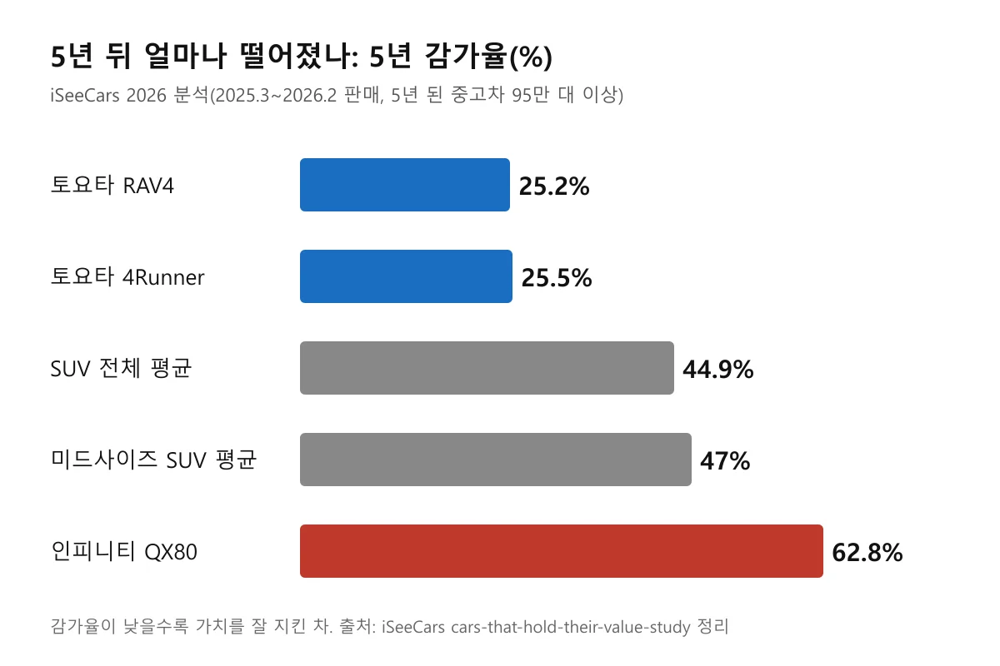
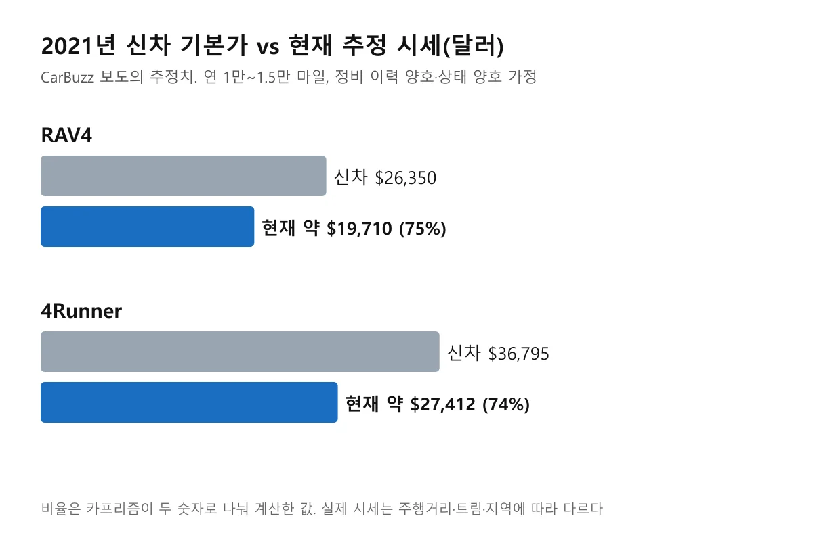
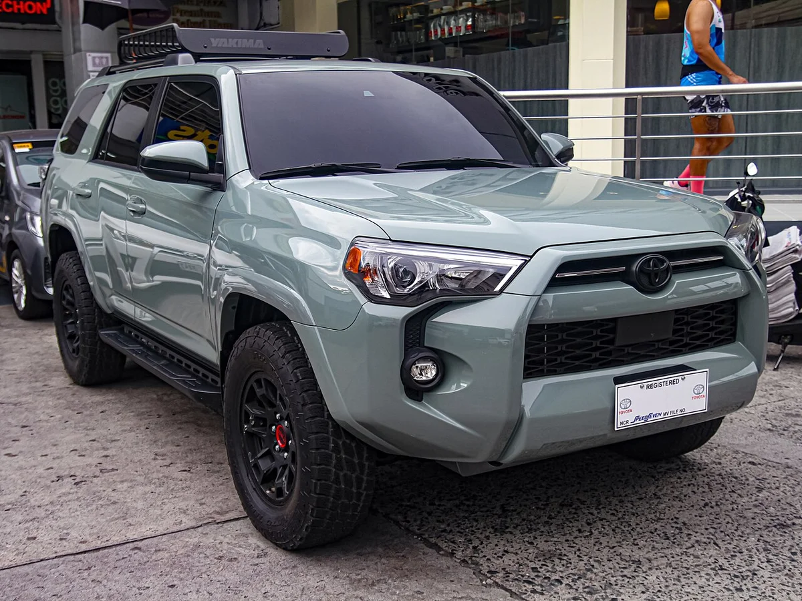
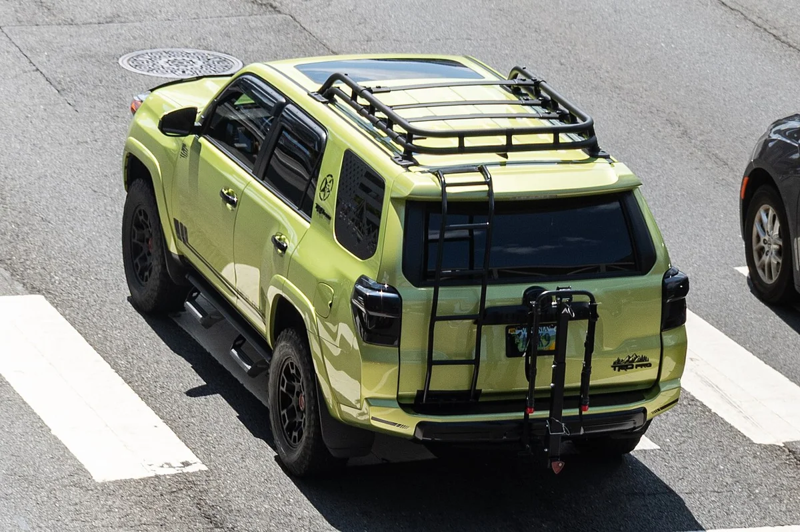
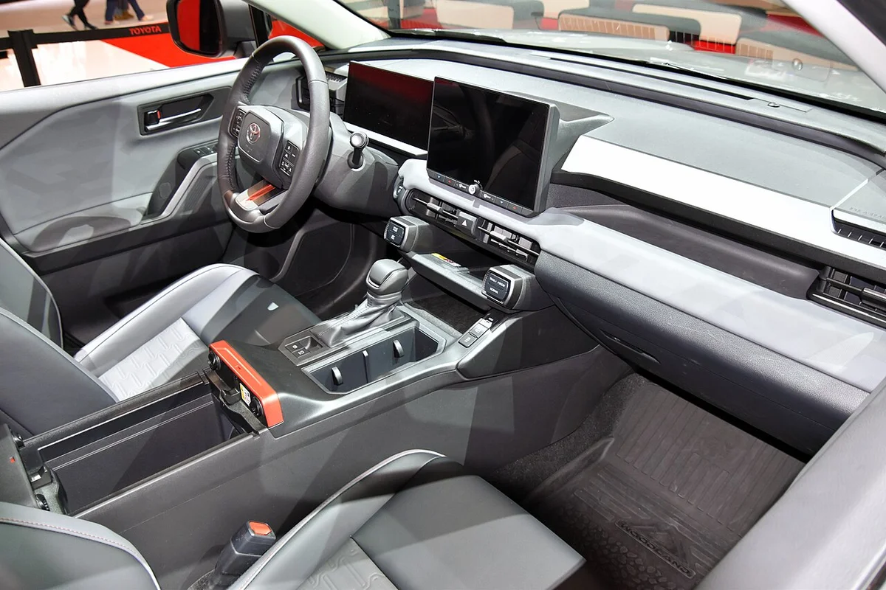
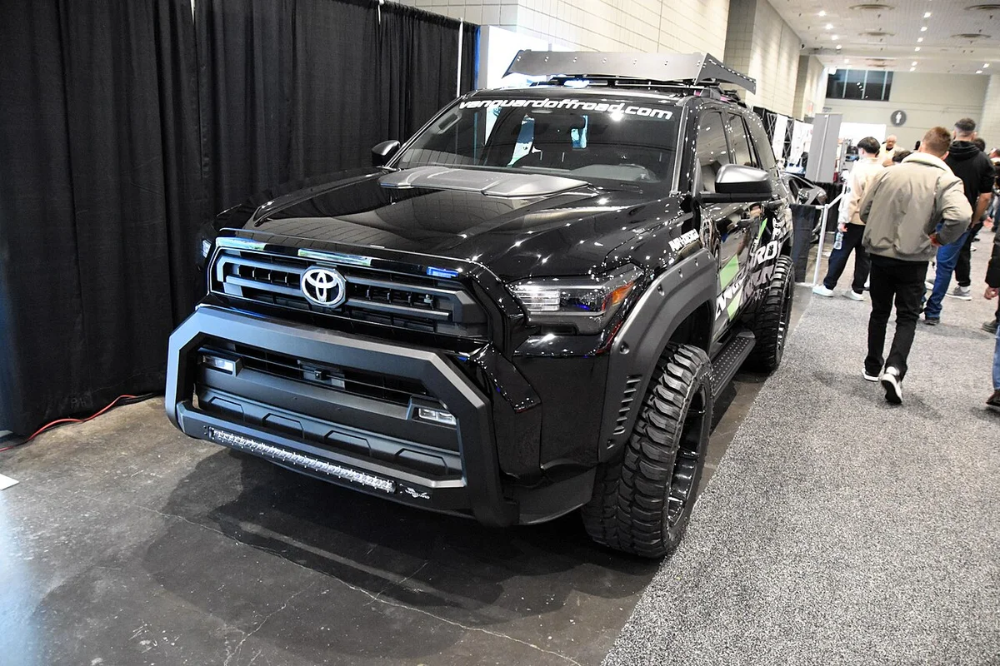
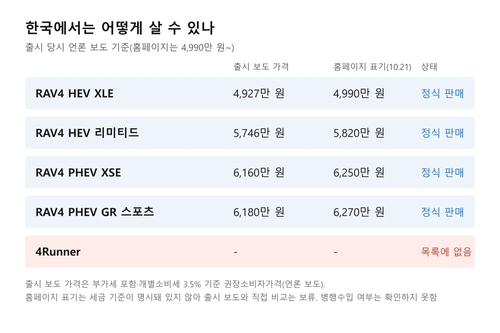

▲ 6세대 토요타 RAV4 우드랜드 하이브리드(2026년형) 전시 차량 ⓒ Wikimedia Commons (CC0)
"5년 탄 SUV, 팔 때 얼마나 받을 수 있을까?" 미국에서는 토요타 RAV4와 4러너가 이 질문에 가장 좋은 답을 준 차로 꼽혔다. 미국 매체 CarBuzz(댄 클라우허, 2026년 10월 20일)가 중고차 분석 업체 iSeeCars의 5년 감가율을 바탕으로 두 차종의 가치 유지력을 정리했고, 이 글은 그 보도를 출발점으로 원 데이터를 직접 확인해 한국 독자 관점으로 풀어 쓴 것이다.
결론부터 말하면 iSeeCars 원문에서 RAV4는 25.2%, 4러너는 25.5%로 확인됐다. 다만 한국에서는 4러너가 토요타코리아 공식 모델 목록에 없고, RAV4는 6세대가 2026년 6월에야 출시돼 한국 중고 시세로 같은 잣대를 대기에는 이르다.
1. CarBuzz 보도는 무엇을 말했나, 원 데이터와 대조했다
CarBuzz는 "RAV4와 4러너는 5년 뒤에도 큰 가치를 유지하는 반면 경쟁 SUV 가격은 무너진다"는 취지로 보도했다. 보도에 인용된 데이터는 iSeeCars의 5년 감가율 조사, 정비비는 CarEdge, 신차 가격은 토요타, 현재 시세 추정은 CarBuzz 마켓플레이스다. 문장은 옮기지 않고 숫자만 원 출처로 다시 확인했다.
iSeeCars 원문 페이지에서 확인한 값은 다음과 같다. 분석 대상은 2025년 3월~2026년 2월에 팔린 5년 된 중고차 95만 대 이상, 전체 평균 5년 감가율은 41.8%다. RAV4는 RAV4와 RAV4 하이브리드를 합친 25.2%(전체 9위, 하이브리드 단독은 25.3%), 4러너는 25.5%(전체 11위, 코롤라 해치백과 동률, 미드사이즈 SUV 1위)로 적혀 있다. SUV 평균은 44.9%, 미드사이즈 SUV 평균은 47.0%다.
반대편 숫자도 원문에서 확인된다. 인피니티 QX80은 62.8%로 가장 많이 빠진 차 2위였고, 감가가 큰 25개 차종 중 24개가 전기차이거나 고급 브랜드 차였다. 반면 CarBuzz가 든 BMW iX 68.6%는 이번에 확인한 iSeeCars 페이지에는 없다. BMW Blog(2026년 7월 22일)가 iSeeCars의 2026년 5년 가치 유지 순위를 인용해 iX의 잔존가치를 31.4%(감가율 68.6%)로 전한 것과 일치하지만, 이는 조사 표본(300만 대 이상)이 다른 별도 자료라 같은 표의 숫자로 단정하지 않고 "보도 기준"으로 적는다.

▲ 5년 감가율 비교(iSeeCars 2026 수치를 카프리즘이 도표로 정리)
2. 25%와 45%의 차이는 가격표로 얼마인가
5년 감가율 25.2%는 신차값의 약 75%를 5년 뒤에도 돌려받는다는 뜻이고, SUV 평균 44.9%라면 55% 남짓만 돌려받는다는 뜻이다. 같은 100을 넣었을 때 평균은 55 안팎, RAV4는 75 안팎이 남는 셈이어서 차이는 20%p 정도다. CarBuzz도 두 차가 평균 SUV보다 신차 가격의 약 20%를 더 지킨다고 썼는데, 이는 원 수치의 차이(44.9와 25.2)와 맞는다.
CarBuzz는 2021년식 기본가와 현재 추정 시세를 같이 보여 줬다. 이 시세는 연 1만~1.5만 마일, 정비 이력 양호라는 가정을 둔 CarBuzz의 추정이므로 실제 거래가가 아니다.
| 차종 | 2021년 신차 기본가 | 현재 추정 시세 | 남은 비율(계산) |
|---|---|---|---|
| RAV4 | 26,350 | 약 19,710 | 약 75% |
| 4러너 | 36,795 | 약 27,412 | 약 74% |
신차 기본가가 1만 달러 넘게(카프리즘 계산) 다른데도 두 차의 남은 비율은 74~75%로 거의 같다. 감가율은 금액이 아니라 비율이라 비싼 차도 같은 비율로 빠지면 잃는 금액만 커진다. 다만 이 시세는 CarBuzz의 가정이 들어간 추정치다.

▲ 신차 기본가 대비 현재 추정 시세(CarBuzz 보도 수치, 비율은 카프리즘 계산)
3. 왜 토요타는 덜 떨어졌나: 보도가 든 이유와 우리가 확인한 것
CarBuzz가 든 이유는 신뢰성 평판과 낮은 유지비다. CarEdge 기준 RAV4의 연간 정비·수리 비용은 약 388달러라고 보도됐다. 4러너는 자연흡기 4.0L V6의 내구성을 높게 평가받는 반면, 새 하이브리드 4기통은 아직 같은 평판을 쌓지 못했다는 것이 보도의 시각이다.
이 평가는 카프리즘이 앞서 다룬 기사와 결이 같다. 4러너 V6 내구품질 조사 기사에서 단순한 V6와 5단 변속기 구성이 신형 SUV보다 앞선 사례를 다뤘다. 다만 신뢰성 평판이 곧 감가율로 이어진다는 인과는 이번 데이터만으로 입증되지 않는다. 수요가 공급보다 꾸준히 큰 차는 값이 덜 빠진다는 설명이 더 직접적일 수 있다.

▲ 5세대 4러너 SR5(루나 록 색상). 이번 조사의 5년 된 차는 대부분 이 세대일 것으로 짐작된다 ⓒ Ethan Llamas, Wikimedia Commons (CC BY-SA 4.0)

▲ 5세대 4러너 TRD 프로 후측면. 오프로드 이미지가 중고 수요를 받치는 요인으로 거론된다 ⓒ OWS Photography, Wikimedia Commons (CC BY 4.0)
📍 숫자를 읽을 때 주의할 점
- 5년 된 차의 이야기: 감가율은 5년 된 차의 실거래 기준이라 지금 파는 신형의 5년 뒤를 약속하지 않는다
- 미국 시장 데이터: 한국 시세·세금·주행 환경과 직접 비교할 수 없다
- CarBuzz 추정 시세: 가정을 둔 추정치이며 iSeeCars 원문에는 없다
4. 신세대는 어떨까: 6세대 RAV4와 6세대 4러너의 변수
CarBuzz는 하이브리드 전용으로 바뀐 신형 RAV4와 신형 4러너의 하이브리드 4기통이 가치 유지력을 이어 갈지는 아직 알 수 없다고 선을 그었다. 이번 감가율은 이전 세대 중심의 기록이라는 뜻이다. 카프리즘도 같은 입장이다. 현행 세대의 5년 뒤 값은 지금 누구도 확정할 수 없다.

▲ 6세대 RAV4 우드랜드 하이브리드(2026년형) 전시 차량 ⓒ Wikimedia Commons (CC0)

▲ 6세대 RAV4 실내. 신형은 이전 세대보다 디지털 비중이 커졌다 ⓒ Wikimedia Commons (CC0)

▲ 6세대 RAV4 LE 하이브리드 AWD(2026년형, 미국 전시 차량) 측면. 한국 판매 트림과 사양이 다르다 ⓒ Charles from Port Chester, New York, Wikimedia Commons (CC0)

▲ 6세대 RAV4 LE 하이브리드 AWD 실내(미국 전시 차량). 한국 판매 트림과 사양이 다르다 ⓒ Charles from Port Chester, New York, Wikimedia Commons (CC0)

▲ 6세대 4러너 TRD 오프로드 전시 차량(액세서리 장착 차량으로 보인다) ⓒ Wikimedia Commons (CC0)
RAV4 하이브리드 전용으로의 전환과 PHEV의 가치는 별개 문제다. RAV4 PHEV 시승기에서 다룬 것처럼 신형 PHEV는 플러그인 배터리를 쓰기 때문에, 배터리 상태가 중고 가격에 어떤 영향을 줄지는 아직 데이터가 쌓이지 않았다.
5. 한국에서는: RAV4는 정식 판매, 4러너는 확인되지 않는다
토요타코리아 공식 사이트의 모델 목록에는 올 뉴 RAV4(PHEV GR 스포츠·PHEV XSE·HEV 리미티드·HEV XLE), 캠리, 알파드, 크라운이 있고 4러너는 없다. 병행수입으로 들어오는 4러너가 있는지는 이번에 확인하지 못했다. 그래서 한국에서 4러너의 중고 시세를 미국 수치와 직접 이을 근거는 없다.
6세대 RAV4는 2026년 6월 16일 국내 출시됐고, 출시 당시 언론 보도 기준 권장소비자가격은 HEV XLE 4,927만 원, HEV 리미티드 5,746만 원, PHEV XSE 6,160만 원, PHEV GR 스포츠 6,180만 원(부가세 포함, 개별소비세 3.5% 기준)이다. 다만 10월 21일 확인한 토요타코리아 홈페이지는 RAV4 HEV·PHEV를 "4,990만 원~"으로 표기하고, 모델 페이지에는 HEV XLE 4,990만 원, HEV 리미티드 5,820만 원, PHEV XSE 6,250만 원, PHEV GR 스포츠 6,270만 원이 적혀 있다. 출시 보도 가격과 차이가 나는 이유(세율·가격 조정 등)는 홈페이지에 표기돼 있지 않아 확인하지 못했다. 구입 전 공식 가격표와 딜러 견적으로 다시 확인해야 한다. 6세대는 출시된 지 넉 달 남짓이라 5년 뒤 한국 감가율은 알 수 없다.

▲ 한국 판매 현황 정리(출시 당시 언론 보도 기준. 토요타코리아 홈페이지는 4,990만 원~로 표기해 차이가 있다)
| 항목 | 미국(iSeeCars·CarBuzz) | 한국 |
|---|---|---|
| RAV4 | 5년 감가율 25.2%(이전 세대 중심) | 6세대 2026년 6월 출시, 중고 시세 자료 확인하지 못함 |
| 4러너 | 5년 감가율 25.5% | 토요타코리아 목록에 없음, 병행수입 현황은 확인하지 못함 |
미국 칸에는 수치가 있고 한국 칸은 대부분 "확인하지 못함"으로 비어 있다. 한국 중고 시세 자료와 4러너 병행수입 현황이 없기 때문이며, 그래서 미국 감가율을 한국 시세에 그대로 대입하지 않는다.
6. 한국 중고차 감가율 기사와 나란히 놓으면
한국 감가율 자료와 이번 미국 수치는 정의가 달라 한 표에 섞어 비교하면 안 된다. 카프리즘의 헤이딜러·엔카 중고차 잔존가치 기사는 국산 5종의 3년 잔존가치율(스포티지 82.4% 등)과 월별 시세 방향을 다뤘고, 같은 글에서 미국 iSeeCars의 포르쉐 5년 감가율도 따로 인용했다. 3년과 5년, 잔존율과 감가율, 국산과 미국은 서로 다른 잣대다.
그래도 읽을 수 있는 공통 패턴은 있다. 카프리즘 감가율 랭킹에서도 대체재가 마땅치 않거나 누적 물량이 적당한 차가 덜 빠졌고, 이번 iSeeCars에서는 고급·전기차가 많이 빠졌다. 값이 비싼 신기술 차가 먼저 빠지고, 단순하고 수요가 꾸준한 차가 덜 빠진다는 방향이 한국·미국에서 비슷하게 나타난다고만 말할 수 있다.
✅ 한국 독자가 이 기사를 쓰는 법
· 미국 숫자는 방향만 참고: 25.2%를 한국 RAV4 시세에 그대로 대입하지 않는다
· 한국 시세는 직접 조회: 살 트림·연식·주행거리의 최근 실거래를 엔카·케이카 등에서 확인한다
· 6세대는 데이터가 없다: 신형 RAV4 구입 시 5년 뒤 값은 가정이 아니라 확인되지 않은 부분으로 둔다
· PHEV 배터리: 중고 판매 시 배터리 보증 조건이 가격에 영향을 줄 수 있어 구입 전 보증 범위를 본다
7. 이번에 확인하지 못한 것
- BMW iX 68.6%는 iSeeCars 해당 페이지에는 없고 BMW Blog의 iSeeCars 2026 순위 인용 보도에서만 확인했다(보도 기준). CarBuzz의 현재 추정 시세도 원 데이터에 없다
- CarEdge의 RAV4 연 388달러 정비비는 원문을 직접 확인하지 못했다(보도 기준)
- 토요타코리아 홈페이지 모델 페이지의 트림별 가격(4,990만~6,270만 원)과 출시 보도 가격(4,927만~6,180만 원)의 차이 원인(세율·가격 조정 여부)은 확인하지 못했다
- 한국 RAV4·4러너의 중고 감가율과 4러너 병행수입 현황은 확인하지 못했다
- 6세대 RAV4·4러너의 5년 뒤 가치는 데이터가 없다
카프리즘 시선
RAV4 25.2%는 SUV 평균 44.9%보다 19.7%p, 4러너 25.5%는 미드사이즈 SUV 평균 47.0%보다 21.5%p 낮다(카프리즘 계산). 두 차가 "덜 빠진다"는 말은 평균과 약 20%p 벌어졌다는 뜻이고, 이는 신차값 100 중 75가 남을 때 평균은 55 안팎이 남는 차이다.
그러나 이 격차는 5년 된 이전 세대의 실거래 기록이다. 본문에서 짚었듯 6세대 RAV4는 하이브리드 전용으로 바뀌었고 신뢰성 평판이 곧 감가율로 이어진다는 인과도 이번 데이터로는 입증되지 않는다. 그래서 이 수치는 "토요타 SUV는 지금까지 값이 잘 지켜졌다"는 과거 사실로 읽고, 한국 신형의 5년 뒤 값을 추정하는 근거로 쓰기는 어렵다.
8. 요약
iSeeCars 2026 조사에서 RAV4는 5년 감가율 25.2%, 4러너는 25.5%로 SUV 평균 44.9%보다 약 20%p 덜 떨어졌다. CarBuzz(2026년 10월 20일)는 이를 2021년 기본가 대비 현재 추정 시세로 보여 줬지만, 이 시세는 가정을 둔 추정이다.
한국에서는 6세대 RAV4가 출시 당시 보도 기준 4,927만~6,180만 원에 정식 판매 중이나 중고 시세 자료는 없고, 4러너는 토요타코리아 목록에서 확인되지 않는다. 미국 수치는 방향을 읽는 용도로만 쓰고, 한국 시세는 직접 조회하는 것이 안전하다.